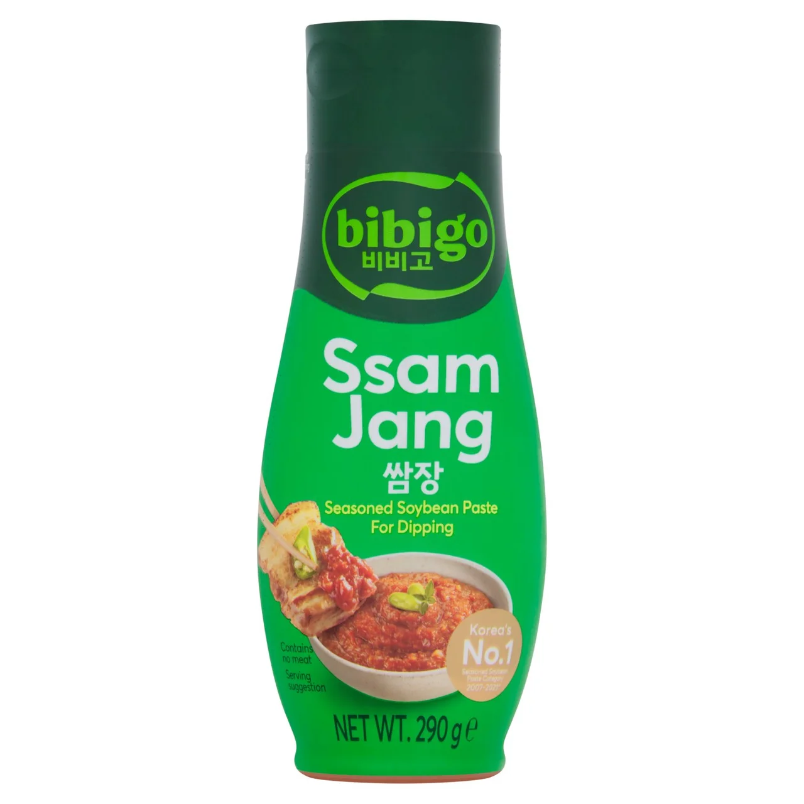

<div> <table style="border-collapse: collapse; width: 99.9809%;" border="1"><colgroup><col style="width: 49.9522%;"><col style="width: 49.9522%;"></colgroup> <tbody> <tr> <td> <div><strong><span style="font-size: 14pt;">Bibigo Sos de soia fermentata</span></strong></div> <div><strong><span style="font-size: 14pt;">290g</span></strong></div> <div><span style="font-size: 14pt;">Partenerul ideal pentru gratarul coreean. Sosul Ssamjang de la Bibigo imbina armonios pasta de soia fermentata cu note fine de usturoi si susan. Perfect ca sos de dipping sau pentru celebrele impachetari in frunze de salata (ssam), acesta aduce savoarea densa si umami a unui K-BBQ veritabil direct in farfuria ta.</span></div> </td> <td></td> </tr> <tr> <td></td> <td><span style="font-size: 14pt;">Bucuria meselor luate impreuna. Transforma orice cina intr-un festin coreean autentic, plin de culoare si vitalitate. De la celebrele galuste Mandu si bolurile aromate de Bibimbap, pana la garniturile traditionale, produsele noastre de import iti ofera tot ce ai nevoie pentru a impartasi cu cei dragi gustul pur al Seulului.</span></td> </tr> </tbody> </table> </div>